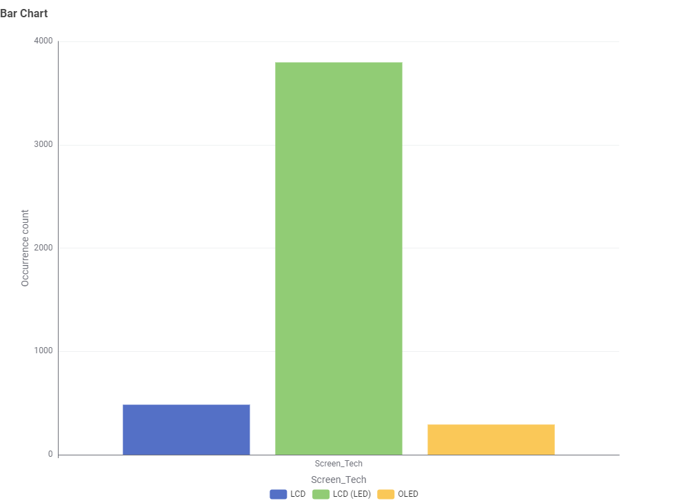
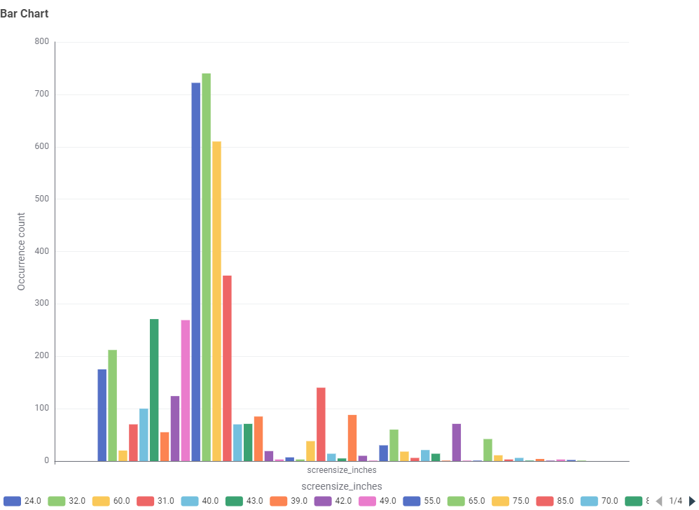
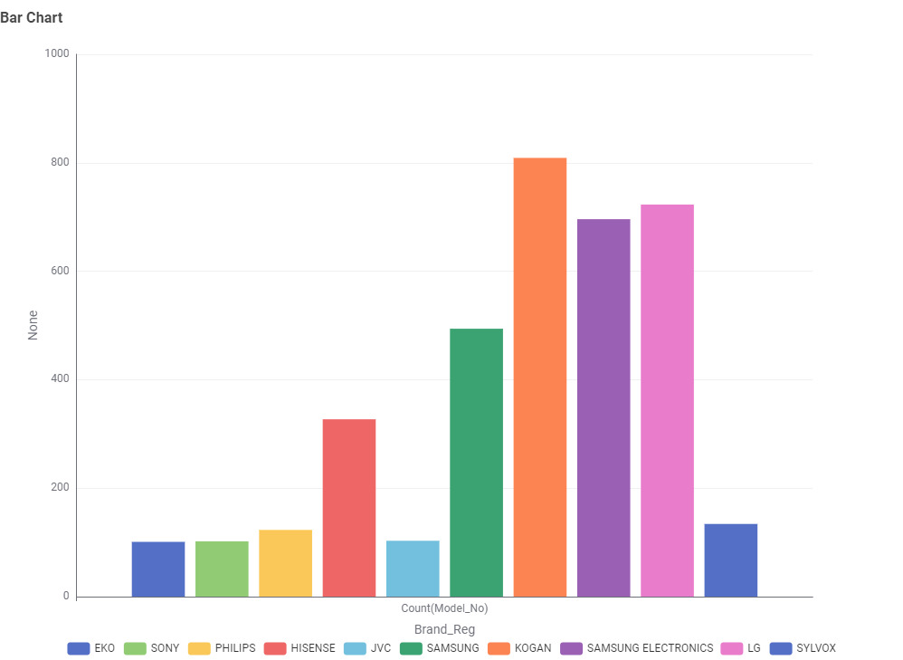
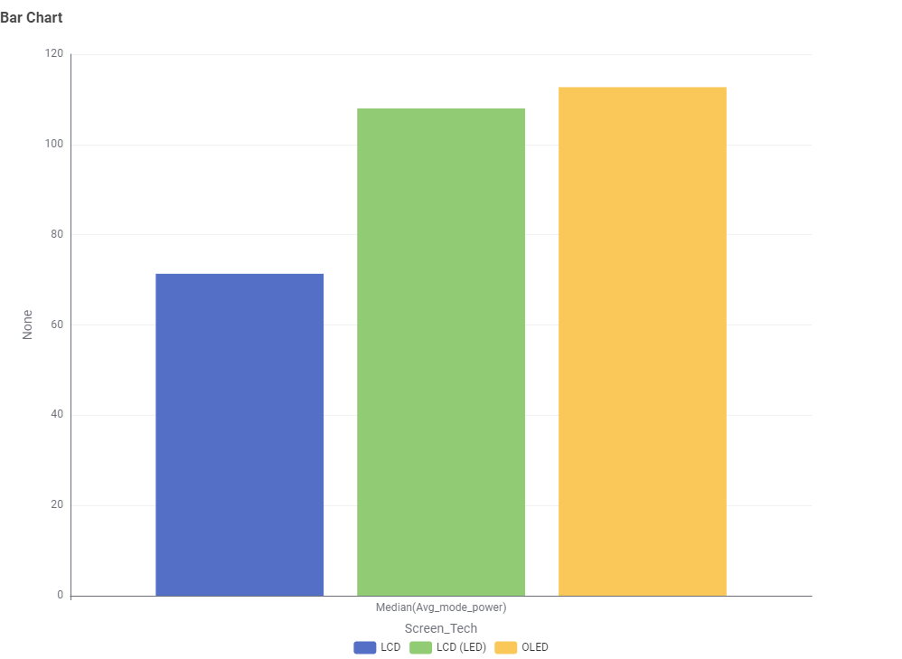
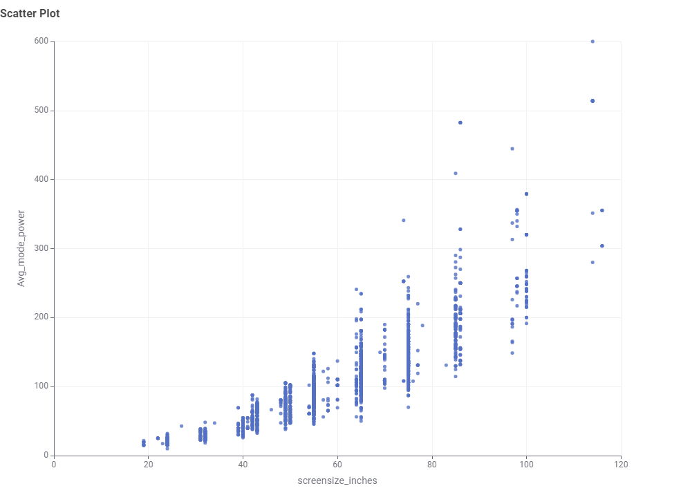
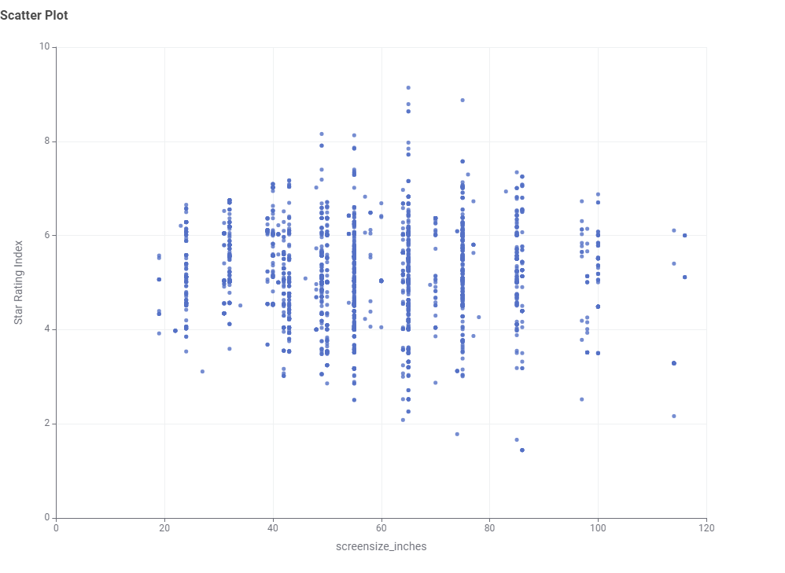

GEMS register, Sep 2026
5,018
television models are currently registered for sale in Australia under the GEMS energy-efficiency scheme.
Wattwise is a small demonstration site built for COS30045 — Data Visualisation. The figures below are real, taken from the Australian Government's GEMS Energy Rating register for televisions.
GEMS register, Sep 2026
5,018
television models are currently registered for sale in Australia under the GEMS energy-efficiency scheme.
GEMS register, Sep 2026
52×
is the gap between the most and least efficient registered model — 51 kWh/year at the low end, 2,652 kWh/year at the high end.
GEMS register, Sep 2026
444 kWh
is the average labelled annual energy consumption across every registered model, regardless of screen size.
Australia's Energy Rating Label helps shoppers compare appliances at a glance. More stars generally means lower running costs. The figures above and on the Televisions page are drawn from the real GEMS register, not made-up numbers.
Two TVs sitting side by side on a showroom floor could cost wildly different amounts to run, even if they look almost identical. The most efficient TV currently registered in Australia uses just 51 kWh a year. The least efficient uses 2,652 kWh, 52 times more. What actually drives that gap? And what should you check before you buy? Let's find out.
| Screen size | Registered models | Avg. energy use (kWh/yr) | Avg. star rating | Est. annual cost* |
|---|---|---|---|---|
| Up to 32" | 576 | 105 | 5.1 | $34 |
| 33"–43" | 650 | 208 | 4.9 | $69 |
| 44"–50" | 492 | 287 | 4.8 | $95 |
| 51"–55" | 813 | 360 | 4.7 | $119 |
| 56"–65" | 958 | 484 | 4.7 | $160 |
| 66"–75" | 767 | 607 | 4.9 | $200 |
| 76" and up | 762 | 878 | 4.8 | $290 |
Energy use and star ratings are averages of each model's own GEMS "labelled energy consumption" figure. *Cost assumes $0.33/kWh, a rough 2026 national average residential electricity price; your actual bill depends on your state, retailer and tariff.
Q1: What type of TV screen technologies are currently available in Australia and which are the most frequent?

Before diving into specifics, it helps to know what's actually being sold. Looking at every registered TV in Australia, LCD (LED) screens dominate the market by far, making up the vast majority of models, followed by plain LCD and then OLED. If you're shopping today, LCD (LED) is what you'll see the most of on the shelf.
Q2: What screen sizes are currently available, and which are the most frequent?

Screen sizes range widely, from small sets to over 100 inches, but a handful of sizes are far more common than others, clustered around familiar sizes like 32, 55 and 65 inches.
Q3: Which brands have the greatest number of different models?

A small group of brands account for a disproportionate share of registered TVs. Looking at the brands with the most registered models in Australia, names like Kogan, LG, and Samsung Electronics have the largest model counts, meaning shoppers have the widest range of choice within those brands specifically.
Q4: Which type of screen technology consumes the least amount of power?

Screen size isn't the only factor. The underlying technology matters too. Comparing typical power use across the three main technologies, LCD panels use noticeably less power than LCD (LED) or OLED screens, making it worth checking not just the size, but what kind of panel is inside.
Q5: What is the relationship between screen size and power use?

The pattern is clear once you look at the numbers. Bigger screens use more power. A TV under 32 inches averages around 105 kWh a year. Jump up to a 76 inch or larger screen, and that average climbs to 878 kWh a year, more than eight times higher. Screen size isn't just about how much space it takes on your wall. It's one of the biggest single factors in what you'll pay to run it.
Q6: What is the relationship between star rating and screen size?

A TV's star rating is meant to make efficiency easy to compare at a glance, but does chasing a higher rating actually save real money? Looking at the real registration data, the answer isn't a simple yes. Star ratings correlate loosely with efficiency, but two TVs with very similar ratings can still differ by hundreds of kilowatt-hours a year, especially once screen size comes into it. A higher star rating is a useful starting point, not a guarantee. It's worth comparing the actual labelled energy figure alongside screen size, not just the star count alone.
Q7 (optional): Are there differences in power consumption between brands?

Do certain brands tend to run more efficiently than others? Looking at power use broken down by brand, the answer is yes, and not just in the average. Some brands cluster tightly around a low, consistent power draw across their whole range. Others span a much wider range, from efficient models to some of the most power hungry TVs in the entire dataset. If you're loyal to a particular brand, it's worth checking whether that brand tends to run consistently efficient, or whether efficiency varies a lot from model to model.
So what should you actually expect to pay? Across every currently registered TV model in Australia, the average labelled energy use comes out to about 444 kWh a year. At a rough $0.33 per kWh, that's around $147 annually just to run one television. Of course, that average hides a lot of variation. A small TV might cost under $40 a year, while a very large one can run past $290. Knowing where a model you're considering sits relative to this average is a quick sanity check before you buy.
With all that in mind, here's how to actually cut what you'll pay to run a TV.
Wattwise was built by Aleeya Batrisya Binti Arni as a lab exercise for COS30045 Data Visualisation at Swinburne University of Technology, Sarawak Campus.
This site is a refresher on HTML, CSS and JavaScript: a navigation menu driven by JavaScript, styling from a single CSS file, and real content about appliance energy consumption in the Australian market, drawn from the Australian Government's GEMS Energy Rating register for televisions.
The TV figures on the Home and Televisions pages are real, sourced from the GEMS register (5,018 models, exported 6 September 2026), with the cost column built on a stated electricity-price assumption. The Televisions page now includes real chart visualisations and narrative context, built as part of a later data-storytelling task.
GenAI assistance was used while building this site. Full notes on what it was
used for, and a short reflection on the experience, are in this project's
README.md file.